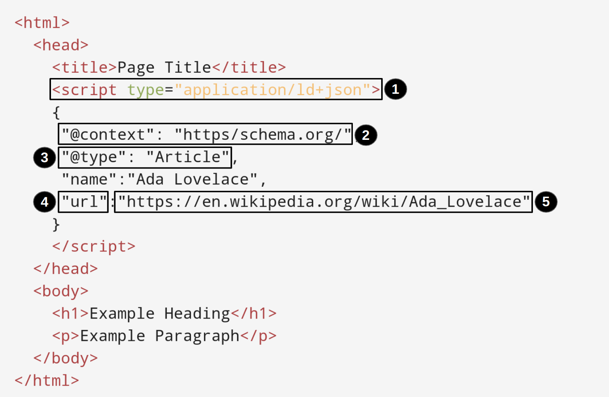

RDF loader¶
RDF or Resource Description Framework (file name extensions .nq, .nt, .jsonld, .rdf, .trig, .turtle) is the standardized format for linked data. We do not need to extract records from an RDF data source, but can instead load its contents directly into the internal store.
Basic usage¶
The RDF loader is imported in the following way:
import { loadRdf, Source } from '@triplyetl/etl/generic'
The following code snippet loads RDF from the specified TriplyDB Dataset into the internal store:
loadRdf(Source.TriplyDb.rdf('my-account', 'my-dataset')),
The following code snippet loads RDF from a SPARQL Construct query that is stored as a TriplyDB Query:
loadRdf(Source.TriplyDb.query('Triply', 'network-query')),
Loading RDF from an HTML page¶
With loadRdf() extractor, it is also possible to extract data from web pages / HTML, which contain Schema in JSON-LD.
This is possible because most websites contain linked data annotations that use Schema.org.
Such linked data is enclosed in a tag:
<script type='application/ld+json'>
...
</script>
Schema markup is how Google can serve up rich results (also called rich snippets and rich cards).
The schema is included in HTML in the following way:

The Script Type: What format your structured data will take (JSON-LD)The Context: Where the language you’re using comes from (schema.org)The Type: What kind of thing is the search engine looking at (Article)The Property: What kind of quality will you be describing when it comes to this type (url)The Value: What you’re actually telling the search engines about this property (the URL of the article)
Example taken from Wikipedia:
The Wikipedia page of the first programmer in history (https://en.wikipedia.org/wiki/Ada_Lovelace) contains the following linked data:
{
"@context": "https://schema.org",
"@type": "Article",
"name": "Ada Lovelace",
"url": "https://en.wikipedia.org/wiki/Ada_Lovelace",
"sameAs": "http://www.wikidata.org/entity/Q7259",
"mainEntity": "http://www.wikidata.org/entity/Q7259",
"author": {
"@type": "Organization",
"name": "Contributors to Wikimedia projects"
},
"publisher": {
"@type": "Organization",
"name": "Wikimedia Foundation, Inc.",
"logo": {
"@type": "ImageObject",
"url": "https://www.wikimedia.org/static/images/wmf-hor-googpub.png"
}
},
"datePublished": "2001-05-20T14:57:05Z",
"dateModified": "2023-03-17T21:28:23Z",
"image": "https://upload.wikimedia.org/wikipedia/commons/0/0b/Ada_Byron_daguerreotype_by_Antoine_Claudet_1843_or_1850.jpg",
"headline": "1815-1852 British mathematician, considered the first computer programmer"
}
This data can be loaded with the following code snippet:
loadRdf(
Source.url('https://en.wikipedia.org/wiki/Ada_Lovelace'),
{ contentType: 'text/html' }
),